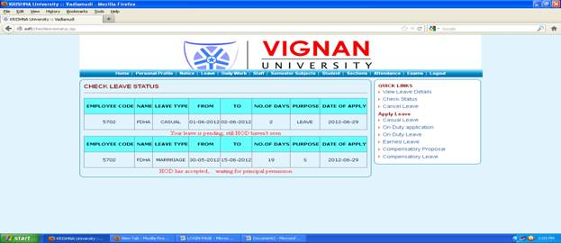
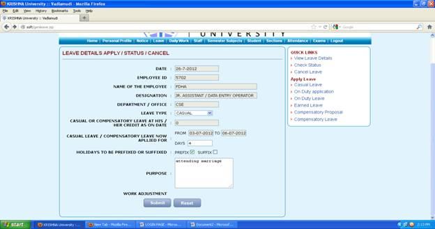
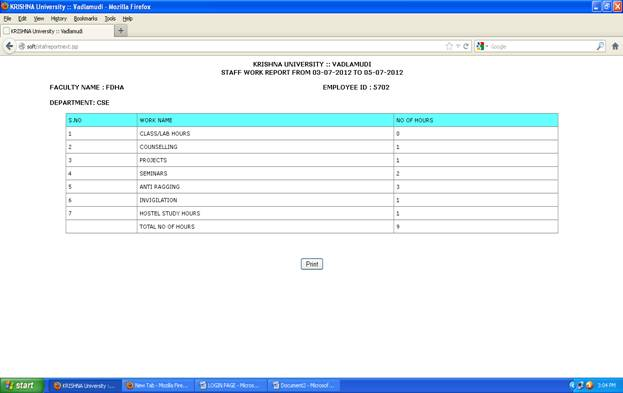

LOGIN
PAGE:
This
is the login page, it contains user id and password by giving the appropriate
user id and password we can enter into the next page in order to do this there
is a submit button in the bottom after giving the user id and password if we
click the submit button we enter into next page
HOME
PAGE:
After
logging in we enter into the home page and the home page contains various
options, home page appears as follows
CHANGE
PASSWORD:
In
the right side of the home page you find change password it contains 3 fields
old password new password and confirm new password if u give values in that
fields if u give values your password will changed
UPLOAD PHOTO:
In
this page we can upload with the help of browse after browsing the url appears
on the text box and by submitting u can get the photo otherwise u can rest the
url by reset button
ADD ACHIEVEMENTS:
Here
you can add any of your achievements by filling the appropriate fields in the
page and the page appears as follows
LIST OF ACHIEVMENTS:
Here
you can find the list of achievements and the page appears as follows
ADD RESEARCH:
Here
you can add any of the research papers and the authors name and also date and
publication media and the page appears as follows
LIST OF RESEARCH PAPERS
SUBMITTED:
Here
the list of research papers submitted appears and the page is as follows

DELETE RESEARCH:
Here
you can delete your research papers by clicking on the appropriate file name
and the page is as follows
ADD PROJECT DETAILS:
Here
you can add your project details like abstract etc; and the page appears as
follows

VIEW PROJECT DETAILS:
Here
the project details of all the submitted once appears and the page is as
follows
MY EXPERIENCE DETAILS:
Here
the details of the particular staff appears and the page is as follows
MESSAGES:
Messages
is one of the button in the home page and if you click that the page appears as
follows

VIEW MESSAGES:
This
link appears in the right side of the message page. Here we can see the messages that were
sent to you and the page shows the text of the message and the time also
SEND MESSAGE:
This
page is used to send messages to the faculty and in this page you should
mention the employee list to whom you want to send the message and the subject
of the message you can see the employee list by entering the name in the right
side text field and the page is as follows

If
you click on submit button the following page appears

SENT MESSAGES:
Here
the sent messages will be appeared i,e; the messages sent by you to particular
staff and the page is as follows
PERSONAL INFORMATION:
This
button is available in the home page where on going to this page u can update
your profile and the information will be added in the list of employees
By
clicking on the submit button your profile will we updated as above all the
links in the personal info are present the above
LEAVE PAGE:
This
is another button that appears in the home page and it is as follows
VIEW LEAVE DETAILS:
This
is the link that appears in the right side of the leave page and it is as
follows

If
you select the type of leave then the leave report appears as follows
LEAVE STATUS:
Here
you can check the leave status that the leave is sanctioned or in pending and
this page appears as follows

CANCEL LEAVE:
Here
you can cancel the leave you had applied if necessary and the page contains
your leave details it is as follows

If
you click on the submit the following page appears

CASUAL LEAVE:
This
page is meant to fill the leave details and it contains several fields and it
is as follows

After
clicking on submit the status appears as follows

ON DUTY LEAVE:
This
page is meant to apply the leave on duty and it contains various fields as
follows

If
you click on submit the status appears as follows

EARNED LEAVE:
This
page is meant to apply the earned leave i,e; any medical leave and the page is
as follows

After
filling the details if you submit the status report appears as follows

COMPENSATORY PROPOSAL:
This
page is meant to keep a proposal for the sanction compensatory leave for
approval and it contains the following details
By
clicking on the submit button the status appears as follows
COMPENSATORY LEAVE:
This
is meant for applying a compensatory leave and this page contains following
details

If
you submit you will get the status as follows

DAILY WORK:
This
is another button in the home page and it appears as follows

ADD/UPDATE THE WORK:
This
page is meant for adding and updating the work done by the faculty on
particular date and it is as follows
If
you click on submit the following page appears

After
filling the details if you submit then the following appears (status)
DELETE WORK:
Here
you can delete the work of the particular page and the page is as follows
If
you submit then the following appears
Here
you can select and then again if u submit then following appears
Fill
the appropriate fields and you can then update as done before
CONSOLIDATED REPORT:
This
gives the report of no of hours worked and it contains the following details
If
you submit you get the report as follows

MY REPORT:
Here
staff attendance individual report is seen the page is as follows
If
you click on submit then the report appears as follows
ATTENDENCE:
This
is another link in the home page and if you click the link then the following
appears\
MARK ATTENDENCE:
Mark
attendance is the first link in the attendance page and it is used to mark the
attendance and the page appears as follows
If
you select any of the section and press enter then the following appears
If
you fill the details and submit then the attendance marked status will be
appeared in the alert box
STUDENT HISTORY:
Here
you can see the history of the selected year, branch and section students and
the page is as follows

And
if you click on submit then the report will be appeared as follows
If
you need to print then click on the print so that you can get the print out of
the report
INDIVIDUAL ATTENDENCE:
Here
you can see the attendance report of the selected student from particular date
to particular date and the page is as follows
If
you click on the submit then the report appears as follows
If
needed you can take the print out by clicking on the print button
SECTION ATTENDENCE(CONSOLIDATED):
Here
you can see the attendance report of the selected year section branch students
and the page is as follows
Here
if you click on submit then the following report will be appeared
If
you want you can take the print out the report by clicking on print button
SECTION ATTENDENCE
(SUBJECT WISE):
Here
you can see the attendance percent of the student subjectwise and the page is
as follows
Here
if you submit then the report of selected branch year semester and section appears as follows
If
you want you can take print out by clicking on the print button
Here you can see the absentees report of the selected branch year
and section and page is as follows
If you click on the submit then the report will be generated as
follows
If needed you can take the printout of the page by clicking on the
print button
Here
you can see the absentees report section wise on a particular date and the page
is as follows
Here
if you click on submit then the report appears as follows
Here
if you need a print out you can take that by clicking on the print button
Here
you can see the list of conducted hours and the page appears as follows
If
you click on submit the report will be generated as follows

If
needed you can take the print out by clicking on print button
DOWNLOAD STUDENT DETAILS AS EXCEL FILE:
Here
you can download the excel report of the attendance as follows
After
giving the details if you click on submit button the excel report will be
generated as follows
Here
you can see the various fields and if you click on any of the field the
particular report appears and the page is as follows
Suppose
if you click on BIRTH LIST then the
following page appears
If
you give any date and submit then the list of students who celebrate birth day
on that particular day appears as follows

Suppose
if you click on DAY WISE ATTENDENCE
(branch wise) then the following page appears
If
you fill the details the report appears as follows

Suppose
if you click on DAY WISE ATTENDENCE (all
branches) then the following page appears
If
you give any date and submit then the attendance report of all branches appears
as follows
Suppose
if you click on DAY WISE ATTENDENCE
(consolidated) then the following page appears
The
report of consolidated attendance daywise until that periods appears as follows
Suppose
if you click on DAY ABSENTEES (BRANCH-WISE) then the
following page appears
If
you submit the details and print then the report appears as follows

Suppose
if you click on ALL HOUR ABSENTEES (YEAR-WISE WITH
SMS)then the following page appears

The
report will be generated as follows
Suppose
if you click on ALL
HOUR ABSENTEES (PERIOD-WISE WITH SMS)then the
following page appears

The
report will be generated as follows if you submit
Suppose
if you click on ALL
HOUR ABSENTEES (PERIOD-WISE WITH SMS)then the
following page appears

If
you submit report will be generated as follows
Suppose
if you click on STUDENT
ADDRESS PRINT ON STICKERS then the following page
appears
If
you submit the report will be generated as follows

Suppose
if you click on STUDENT
ADDRESS REPORT then the following page appears
The
report will be generated as follows if you submit

Suppose
if you click on STUDENT
ADDRESS CONFIRM
then
the following page appears

The
excel report will be generated as follows

Suppose
if you click on Course-wise
SMS to All Students / Parents / Both then the
following page appears
EXAMS:
This
is another link in the home page and if you click this link the following page
appears
This
is first link in the exam page and the page appears as follows
If
you submit the details internal marks entry appears as follows
If
you give the marks and submit then the updated status occurs as follows
This
is another link in the exam page and the page appears as follows
If
you fill the details and then submit the above one the subject examination allocation
will be done
This
is another link in the exam page and the page appears as follows
If
you select export to excel report then the excel report will be generated
FINALIZED SECTION MARKS REPORTS:
This
is another link in exam page and page appears as follows
The
excel report will be generated as follows
SECTION
MARKS (ONE SUBJECT-ONE EXAM-ONE NUMBER):
In this you can see the
individual person marks, in the particular subject, the page appear like this
SECTION
MARKS (ONE SUBJECT-ONE EXAM-ALL NUMBERS)
In this you can see all
numbers marks on a particular subject, the page appear like this

SECTION
MARKS (ONE SUBJECT-ALL EXAMS-ALL NUMBERS):
In this you can see all
the exam marks of all the numbers in a particular subject, the page appear like
this
SECTION
MARKS (ALL SUBJECTS-ALL EXAMS-ALL NUMBERS):
In this you can see all
the subject marks, the page appear like this

FINALIZED
INTERNAL MARKS (SUBJECT WISE)
In this you can see
finalized internal marks off all the subjects, the page appears like this
EXAM
STATUS:
In this you can see
status of the exam by branch wise, the page appear like this
COUNSELING:
In the menu if you click on counseling option if the
students are there then it shows various option, otherwise it shows a blank
page
LOGOUT:
In this by clicking on
the logout option you will come out of the page, the page appear like this